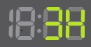
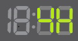

Коды ошибок стиральной машины с табло.
5E, 5C, E2 - Не сливается вода из машины:
Засорился сливной шланг;
Засор в канализации;
Засорились шланги внутри машины;
Засорился фильтр сливного насоса (сливной фильтр);
Согнут или сдавлен сливной шланг;
Не работает сливной насос;
Замерзла вода в машине (машину хранили при минусовой температуре).
H1, H2, HE, HE1, HE2, HC, HC1, HC2, E5, E6 - Не нагревается вода:
Неправильно подключили машину к электросети;
Не работает нагреватель (ТЭН) стирки;
Не работает нагреватель (ТЭН) сушки.
4E, 4C, E1 - Не заливается вода в машину:
Закрыт кран подачи воды для машины или нет воды в доме;
Согнут или сдавлен заливной шланг;
Засорился заливной фильтр-сеточка;
Сработала защита заливного шланга «Аква стоп / Aqua Stop».
4C2 - В машину заливается горячая вода - выше 50 °С:
Заливной шланг подключен к крану горячей воды.
SUD, 5D (SD) - В баке слишком много пены:

Положили слишком много порошка;
Положили порошок, который не подходит для машины системы автомат;
Почистить фильтр.
UE, UB, E4 - Машина не может равномерно распределить вещи в барабане:
Белье сбилось в кучу или перекрутилось между собой;
В машине мало вещей: одна или две;
В машине слишком много белья.
LE, LC, E9 - Из машины самопроизвольно сливается вода:
Низко лежит сливной шланг;
Сливной шланг неправильно подключили к канализации;
Есть отверстие или трещина в баке, из которого вытекает вода.
3E, 3E1, 3E2, 3E3, 3E4, 3C, 3C1, 3C2, 3C3, 3C4, EA - Мотор перегружен, заблокирован посторонним предметом или сломался:
Перегрузка электродвигателя из-за большого количества белья;
Не работает электродвигатель.
lE, lC, E9 - Нестабильное напряжение в электросети (слишком низкое или высокое):
На машину подается напряжение меньше 200 +/- 4 Вольта, или выше 250 +/- 4 Вольта более 30 секунд.
DE, DE1, DE2, DC, DC1, DC2, ED - Дверца люка не закрыта:
Неплотно закрыта дверца люка;
Не работает механизм закрытия дверцы люка.
DС3 - Дверца «Add Door» (для дополнительной загрузки белья в процессе стирки) не закрыта или не открывается:
Перед запуском стирки не закрыли дверцу «Add Door»;
Не работает блокировка / разблокировка дверцы «Add Door».
DDC - Неправильно открыли дверцу «Add Door» (для дополнительной загрузки белья) во время стирки:
 Дверцу «Add Door» открыли во время стирки без нажатия кнопки «Пуск/Пауза».
Дверцу «Add Door» открыли во время стирки без нажатия кнопки «Пуск/Пауза».
LE1, LC1 - На дно машины попала вода:
Протекает сливной фильтр (неплотно закрыт или поврежден);
Вытекает вода из бункера (контейнера) для порошка;
Протекают внутренние соединительные шланги или сливной шланг;
Протекает вода из дверцы (повреждена манжета).
DE, DE1, DE2, DC, DC1, DC2, ED - Дверца люка не закрыта:
Неплотно закрыта дверца люка;
Не работает механизм закрытия дверцы люка.
DC3 - Дверца «Add Door» (для дополнительной загрузки белья в процессе стирки) не закрыта или не открывается:
Перед запуском стирки не закрыли дверцу «Add Door»;
Не работает блокировка / разблокировка дверцы «Add Door».
DDC - Неправильно открыли дверцу «Add Door» (для дополнительной загрузки белья) во время стирки:
 Дверцу «Add Door» открыли во время стирки без нажатия кнопки «Пуск/Пауза».
Дверцу «Add Door» открыли во время стирки без нажатия кнопки «Пуск/Пауза».
LC1, LC1 - На дно машины попала вода:
Протекает сливной фильтр (неплотно закрыт или поврежден);
Вытекает вода из бункера (контейнера) для порошка;
Протекают внутренние соединительные шланги или сливной шланг;
Протекает вода из дверцы (повреждена манжета).
TE, TE1, TE2, TE3, TC, TC1, TC2, TC3, TC4, EC - Нет сигнала от датчика температуры:

Поврежден датчик или его проводка.
OE, OF, OC, E3 - В машине слишком много воды:
Неправильно подключен сливной шланг к канализации;
Клапан для залива воды заблокировался в открытом состоянии.
1E, 1C, E7 - Нет сигнала от датчика уровня воды:
Поврежден датчик или его проводка.
BE, BE1, BE2, BE3, BC2, EB - Не работают кнопки / кнопка на панели управления:
Западают («залипают») пластиковые кнопки на панели управления.
AE, AC, AC6 - Ошибка связи:
Нет сигнала между платами управления.
CE, AC, AC6 - Температура воды перед сливом выше или равна 55 °С:
Заливной шланг подключен к крану горячей воды.
8E, 8E1, 8C, 8C1 - Не работает датчик вибрации «VRT+»:
Поврежден датчик или его проводка.
EE - Не работает датчик температуры сушки (появляется только у машин с функцией сушки белья):
Поврежден датчик или его проводка.
FE, FC - Не работает вентилятор / фен сушки (появляется только у машин с функцией сушки белья):
Не работает вентилятор / фен сушки.
SDC - Не работает автоматический дозатор (появляется только у машин с функцией Wi-Fi):
Не работает автоматический дозатор.
6C - Неисправен привод или проводка автоматического дозатора (появляется только у машин с функцией Wi-Fi):
Не работает привод или проводка автоматического дозатора.
2H, 3H, 4H - Оставшееся время до конца стирки:


Более 99-ти минут до окончания стирки (2Н - 2 часа, 3Н - 3 часа и.т.д.).
Hot - Высокая температура внутри барабана (появляется только у машин с функцией сушки белья):
Температура внутри барабана выше 70 °C.
A0...A9, B0, C0, D0, E0 - Включен заводской тестовый режим:
Включен заводской тестовый режим.
CLB, CB, _ _ _ - Запущен режим «Калибровка»:
 Запущен режим «Калибровка».
Запущен режим «Калибровка».
PoF - Во время стирки отключили электричество (ошибка появляется после подачи электричества):
Во время стирки отключили электричество.
BC - Машина не может запустить мотор:
Не работает триак (симистор) включения вращения мотора.
 с табло")
")
")
")
")
")
")
")
")
")
")
")
")
")
")